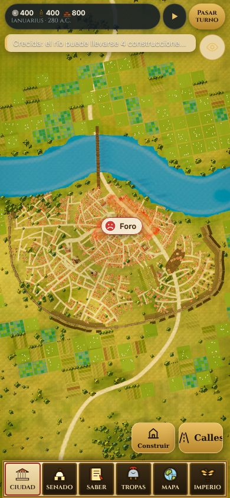
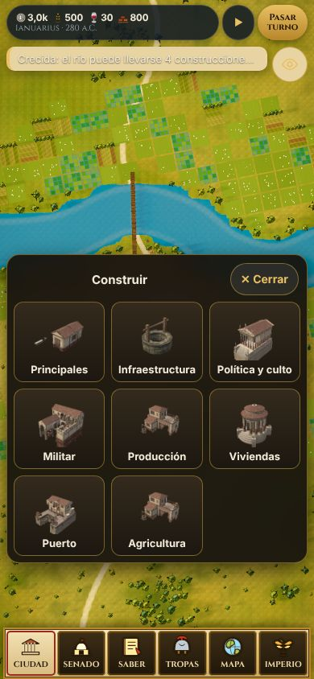
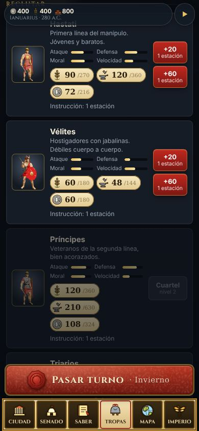
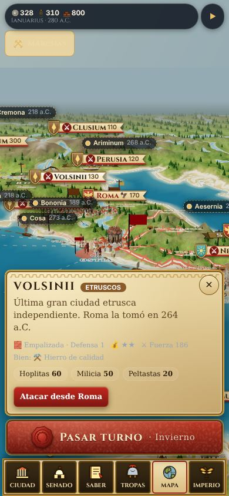
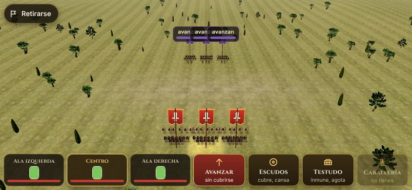
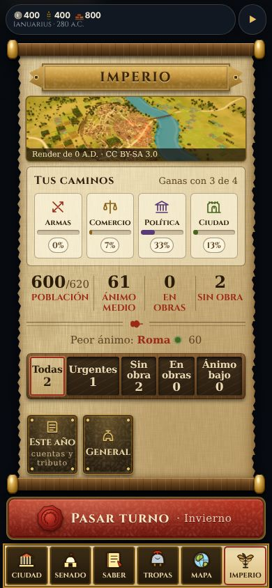

<title>Cómo jugar a AQVILA</title>
<meta name="claude:viewport-fit-sides" content="cover">
<link rel="stylesheet" href="https://fonts.googleapis.com/css2?family=Cinzel:wght@600;700&family=Source+Sans+3:wght@400;600;700&display=swap">
<style>
/* Una columna estrecha, como un rollo de papiro: texto corto y una captura del móvil junto a cada paso */
:root{
  --papiro:#f3e8cf; --tinta:#2b1d0c; --suave:#6b5434; --bronce:#9a6b1f; --rojo:#9e2a1c; --tarjeta:#fbf5e6; --raya:#d9c49a;
  --titulo:"Cinzel",Georgia,"Times New Roman",serif; --texto:"Source Sans 3",system-ui,-apple-system,"Segoe UI",sans-serif;
}
@media (prefers-color-scheme: dark){:root:not([data-theme="light"]){
  --papiro:#17120c; --tinta:#f1e6cf; --suave:#c9b38a; --bronce:#e0ad55; --rojo:#e0644f; --tarjeta:#221a11; --raya:#4a3a22; color-scheme:dark}}
:root[data-theme="dark"]{--papiro:#17120c; --tinta:#f1e6cf; --suave:#c9b38a; --bronce:#e0ad55; --rojo:#e0644f; --tarjeta:#221a11; --raya:#4a3a22; color-scheme:dark}
body{background:var(--papiro);color:var(--tinta);font:17px/1.5 var(--texto);
  padding-left:max(16px,env(safe-area-inset-left,0px));padding-right:max(16px,env(safe-area-inset-right,0px));padding-block:20px 40px}
main{max-width:560px;margin:0 auto;display:flex;flex-direction:column;gap:28px}
header{text-align:center;display:flex;flex-direction:column;gap:6px;padding-top:8px}
.eyebrow{font:600 12px var(--texto);letter-spacing:.16em;text-transform:uppercase;color:var(--bronce)}
h1{font:700 34px/1.1 var(--titulo);letter-spacing:.04em;margin:0;text-wrap:balance}
h2{font:700 20px/1.2 var(--titulo);letter-spacing:.05em;margin:0 0 10px;color:var(--rojo);text-wrap:balance}
p{margin:0}
.intro{color:var(--suave)}
section{display:flex;flex-direction:column;gap:12px}
.caminos{display:grid;grid-template-columns:1fr 1fr;gap:10px}
.camino{background:var(--tarjeta);border:1px solid var(--raya);border-radius:10px;padding:10px 12px;min-width:0}
.camino b{display:block;font:700 15px var(--titulo);letter-spacing:.05em;color:var(--bronce)}
.camino span{font-size:15px}
.nota{font-size:15px;color:var(--suave)}
ol.pasos{list-style:none;margin:0;padding:0;display:flex;flex-direction:column;gap:18px;counter-reset:p}
ol.pasos>li{counter-increment:p;display:grid;grid-template-columns:34px 1fr;gap:10px;align-items:start}
ol.pasos>li::before{content:counter(p);display:grid;place-items:center;width:30px;height:30px;border-radius:50%;
  background:var(--rojo);color:#fff;font:700 15px var(--titulo)}
ol.pasos>li>div{min-width:0;display:flex;flex-direction:column;gap:10px}
figure{margin:0;display:flex;flex-direction:column;align-items:center;gap:4px}
figure img{width:62%;max-width:240px;border-radius:12px;border:1px solid var(--raya);box-shadow:0 2px 10px rgba(0,0,0,.18);display:block}
figure.ancha img{width:100%;max-width:100%}
figcaption{font-size:13px;color:var(--suave);text-align:center}
dl.tabs{margin:0;display:flex;flex-direction:column;gap:8px}
dl.tabs div{display:grid;grid-template-columns:82px 1fr;gap:10px;align-items:baseline;border-bottom:1px solid var(--raya);padding-bottom:7px}
dt{font:700 13px var(--titulo);letter-spacing:.06em;text-transform:uppercase;color:var(--bronce)}
dd{margin:0;font-size:16px;min-width:0}
ol.consejos{margin:0;padding-left:22px;display:flex;flex-direction:column;gap:8px}
footer{font-size:12px;color:var(--suave);text-align:center;border-top:1px solid var(--raya);padding-top:12px}
</style>

<main>
  <header>
    <span class="eyebrow">Mini guía · versión 164</span>
    <h1>AQVILA</h1>
    <p class="intro">Eres Roma en el año 280 a.C. Haces crecer tus ciudades, ganas al Senado, comercias y haces la guerra. Las batallas se ven en 3D y las diriges con el dedo.</p>
  </header>

  <section>
    <h2>Cómo se gana</h2>
    <p>Hay cuatro caminos. <b>Ganas al cumplir tres.</b> No hay plazo de años.</p>
    <div class="caminos">
      <div class="camino"><b>Armas</b><span>Tomar Cartago y plazas enemigas.</span></div>
      <div class="camino"><b>Comercio</b><span>Reunir 3.000 denarios, abrir rutas y firmar acuerdos.</span></div>
      <div class="camino"><b>Política</b><span>Ser Príncipe del Senado, con el apoyo de los bandos.</span></div>
      <div class="camino"><b>Ciudad</b><span>Barrios bien atendidos y Roma convertida en «Urbs».</span></div>
    </div>
    <p class="nota">Los ves en Imperio, «Tus caminos». Un camino logrado se pierde si deja de cumplirse 3 meses. Si cae Roma, pierdes.</p>
  </section>

  <section>
    <h2>Los primeros 10 minutos</h2>
    <ol class="pasos">
      <li><div><p><b>Empieza.</b> En el menú, «Empezar la campaña». Lee la carta del año 280 y pulsa «Continuar».</p></div></li>
      <li><div><p><b>Mira la ciudad.</b> Arriba están los denarios, el grano y los materiales. Si un barrio sale con cara triste, tócalo: te dice qué le falta.</p>
        <figure><figcaption>Tu ciudad. El Foro, con cara triste, pide algo.</figcaption></figure></div></li>
      <li><div><p><b>Construye.</b> Pulsa el botón redondo <b>Construir</b>, elige un grupo y un edificio. Con <b>Calles</b> trazas una calle con el dedo.</p>
        <figure><figcaption>Los grupos de edificios.</figcaption></figure></div></li>
      <li><div><p><b>Comida.</b> El grano alimenta al pueblo y a las tropas. En Construir, <b>Agricultura</b>: trigo, huerto y pasto; más tarde olivar y viña.</p></div></li>
      <li><div><p><b>Recluta.</b> Pestaña <b>Tropas</b>, baja a «Reclutar» y pulsa <b>+20</b> en Hastati. Tardan una estación.</p>
        <figure><figcaption>Cada tropa dice lo que cuesta y lo que tarda.</figcaption></figure></div></li>
      <li><div><p><b>Ataca.</b> Pestaña <b>Mapa</b>. Toca una ciudad enemiga vecina (las que llevan ✕). Mira su «Fuerza» y pulsa <b>Atacar desde Roma</b> y luego <b>¡A las armas!</b></p>
        <figure><figcaption>Volsinii, la vecina más fácil al empezar.</figcaption></figure></div></li>
      <li><div><p><b>Deja pasar el tiempo.</b> <b>Pasar turno</b> salta a la estación siguiente. El botón ▶ deja correr el tiempo solo.</p></div></li>
      <li><div><p><b>La batalla.</b> Cuando llega tu ejército: <b>Ir al choque</b> para dirigirla tú, o <b>Delegar en tus tribunos</b> para que se resuelva sola.</p></div></li>
      <li><div><p><b>Dirígela.</b> Pon el móvil en horizontal. Toca un cuerpo (Ala izquierda, Centro, Ala derecha) y luego una orden: Avanzar, Escudos o Testudo. Si va mal, <b>Retirarse</b>.</p>
        <figure class="ancha"><figcaption>Abajo, a la izquierda, tus cuerpos; a la derecha, las órdenes.</figcaption></figure></div></li>
    </ol>
  </section>

  <section>
    <h2>Las pestañas de abajo</h2>
    <dl class="tabs">
      <div><dt>Ciudad</dt><dd>Tu ciudad desde arriba. Construir y Calles.</dd></div>
      <div><dt>Senado</dt><dd>Votaciones, bandos, tu carrera, fiestas, plan de obras y ministros.</dd></div>
      <div><dt>Saber</dt><dd>La ciencia: abre edificios, cultivos y tropas nuevas.</dd></div>
      <div><dt>Tropas</dt><dd>Tu guarnición, las clases sociales y reclutar.</dd></div>
      <div><dt>Mapa</dt><dd>El Mediterráneo: atacar, reforzar y ver las marchas.</dd></div>
      <div><dt>Imperio</dt><dd>Tus caminos de victoria, «Este año» (cuentas y tributo) y el General.</dd></div>
    </dl>
    <p class="nota">Si tocas la <b>tira de arriba</b> lo ves todo: recursos, ciudades, Ficha (con el Gobernador), Cuentas, Mercado y Menú.</p>
    <figure><figcaption>Imperio: cuánto llevas de cada camino.</figcaption></figure>
  </section>

  <section>
    <h2>Cinco consejos</h2>
    <ol class="consejos">
      <li><b>Lee la línea del consejero</b>, arriba: te dice lo que urge.</li>
      <li><b>No te quedes sin denarios.</b> Si el mes cierra en rojo, el Senado desconfía. Mira «Este año» en Imperio antes de gastar.</li>
      <li><b>Ataca primero lo débil.</b> En la hoja de Atacar compara tu fuerza con la suya.</li>
      <li><b>¿Muchas ciudades?</b> En la Ficha de cada una enciende «Que la lleve un gobernador»: cada estación arregla lo que falta.</li>
      <li><b>Que no falte grano.</b> Si baja, pon campos o compra en el Mercado (tocando la tira de arriba).</li>
    </ol>
  </section>

  <footer>Capturas del juego, versión del 24/11/2026. Soldados y texturas de 0 A.D. (Wildfire Games, CC BY-SA 3.0).</footer>
</main>
